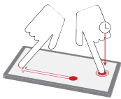
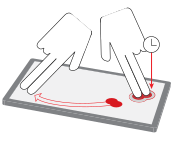
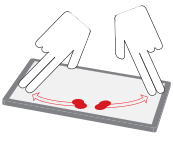

Multitouch (touch) input sessions are created with the type SCREEN_EVENT_MTOUCH_TOUCH and allow your application access to raw touch events.
The following session properties are applicable to receive touch sessions:
Other session properties applicable to pointer sessions are SCREEN_PROPERTY_BRUSH_CLIP_POSITION and SCREEN_PROPERTY_BRUSH_CLIP_SIZE, but it's not usually necessary to use these properties because when you use sessions, you can define the size and position via the session's input region. They are made available more so for windows.
A touch session's SCREEN_PROPERTY_MODE can be set to one of the following:
All input events are converted to SCREEN_EVENT_GESTURE events.
The properties SCREEN_PROPERTY_GESTURE_PARAMETERS and SCREEN_PROPERTY_IDLE_TIMEOUT are used to control how the touch events are converted to gestures.
It's important to note that gestures are not necessarily produced by a single contact. All contacts (fingers), especially on devices that support multitouch, are considered when calculating a gesture. A gesture isn't calculated based on each separate contact. Some gestures require multiple contacts (e.g., zoom) while others don't (e.g. tap). However, multiple contacts can still be interpreted as one gesture.
The converted gesture can be retrieved from the SCREEN_PROPERTY_SCAN property of the SCREEN_EVENT_GESTURE event. The gestures that can be detected are defined by Screen gesture types. Once your application determines the gesture received, it can act accordingly. Unless you're handling specific gestures to execute differently based on an exact gesture, then you should stick with using only the SCREEN_PROPERTY_SCAN property to determine the gesture you receive.
Sometimes, a user makes a gesture using multiple contacts for a gesture that's defined using only one contact. And sometimes, your application needs to know more specifics on the contacts used in the single gesture. When this happens, the details of the contacts are conveyed in the SCREEN_PROPERTY_MODIFIERS property of the SCREEN_EVENT_GESTURE event. SCREEN_PROPERTY_MODIFIERS is a 32-bit integer that conveys two 16-bit values. The higher order set of 16 bits represents the number of participating contacts and the lower order set of 16 bits represents non-participating contacts.
Participating contacts refer to the number of contacts that are actively used to calculate the gesture. The non-participating contacts refer to the number of contacts that are detected, but not considered in the determination of the gesture.
See below for examples of some gestures and their corresponding particpating and non-participating contacts:
| A user has one finger on the device surface with a second finger also contacting the same surface and performing a swipe action. Screen interprets these contacts as one gesture (a swipe) with one participating contact and one non-participating contact. |
 |
| A user has two fingers on the device surface, and two more fingers performing a swipe action together. Screen resolves this combination to one swipe gesture with two participating fingers and two non-participating fingers. |
 |
| A user has four fingers on the touch surface, two swiping in one direction and two swiping in the opposite direction simultaneously. Screen resolves this combination of contacts and actions to one zoom gesture with four participating fingers and zero non-participating fingers. |
 |
Another way of getting gestures if this SCREEN_INPUT_MODE_GESTURE mode isn't set, is to simply query the SCREEN_PROPERTY_EVENT of the session. This property will return you the touch event. You can then interpret the gesture based on the touch events.
If you don't need the specific details from touch events for your gesture application, it's recommended that you set the SCREEN_INPUT_MODE_GESTURE mode for your session. This way, you're not flooded with numerous touch events, giving you better performance.
You can retrieve all events from all devices that are associated with a display (or default display) by creating a session that's not tied to a window:
...
screen_session_t session;
screen_create_session_type(&session, context, SCREEN_EVENT_MTOUCH_TOUCH);
...
Conversely, you can choose to receive events only from devices that have a presence on the display (associated with a window) by associating the session to a window:
...
screen_session_t session;
screen_create_session_type(&session, context, SCREEN_EVENT_MTOUCH_TOUCH);
screen_set_session_property_pv(session, SCREEN_PROPERTY_WINDOW, (void**) &window);
...
Raw touch events can be converted to gestures using touch sessions. The following code snippet shows how to create a touch session and convert its raw touch event to gestures recognized by Screen.
....
screen_context_t context;
screen_window_t window;
....
screen_session_t session;
screen_create_session_type(&session, context, SCREEN_EVENT_MTOUCH_TOUCH);
screen_set_session_property_pv(session, SCREEN_PROPERTY_WINDOW, (void **)&window);
int mode = SCREEN_INPUT_MODE_GESTURE;
screen_set_session_property_iv(session, SCREEN_PROPERTY_MODE, &mode);
screen_flush_context(context, 0);
screen_event_t ev;
screen_create_event(&ev);
long long timeout = ~0;
while (!screen_get_event(context, ev, timeout)) {
int type = SCREEN_EVENT_NONE;
screen_get_event_property_iv(ev, SCREEN_PROPERTY_TYPE, &type);
if (type == SCREEN_EVENT_GESTURE) {
int scan = 0;
screen_get_event_property_iv(ev, SCREEN_PROPERTY_SCAN, &scan);
const char *str = NULL;
if (scan == SCREEN_GESTURE_TAP) {
str = "TAP";
} else if (scan == SCREEN_GESTURE_ZOOM_OUT) {
str = "ZOOM_OUT";
} else if (scan == SCREEN_GESTURE_ZOOM_IN) {
str = "ZOOM_IN";
} else if (scan == SCREEN_GESTURE_SWIPE_RIGHT) {
str = "SWIPE_RIGHT";
} else if (scan == SCREEN_GESTURE_SWIPE_LEFT) {
str = "SWIPE_LEFT";
} else if (scan == SCREEN_GESTURE_SWIPE_DOWN) {
str = "SWIPE_DOWN";
} else if (scan == SCREEN_GESTURE_SWIPE_UP) {
str = "SWIPE_UP";
} else if (scan == SCREEN_GESTURE_HOLD) {
str = "HOLD";
}
if (str) {
int mods = 0;
unsigned long long dt;
int delta[2] = { 0, 0 };
screen_get_event_property_iv(ev, SCREEN_PROPERTY_MODIFIERS,
&mods);
screen_get_event_property_llv(ev, SCREEN_PROPERTY_DURATION,
(long long *)&dt);
screen_get_event_property_iv(ev, SCREEN_PROPERTY_DISPLACEMENT,
delta);
printf("SCREEN_GESTURE_%s;mods=0x%08x;duration=%llu;delta(%d,%d)\n",
str, mods, dt, delta[0], delta[1]);
fflush(stdout);
}
}
}
Contact points are often finger touches on an input device that supports multitouch. Usually, contact points in series are associated with the manipulation (e.g., stretch, move, rotate) of one or more UI elements.
Tracking is the animation of the movement following these contact points. The ability to track contact points is made available to any session that receives raw positional or displacement events.
It's important to note that tracking is not an event, but a model of the movement of contact points when raw data is received. The model is associated with the session and is represented by a 3x3 transform matrix. This matrix indicates changes in size, position and orientation that have resulted from contact movements thus far.
Calculations to generate the transform matrix are made when your application retrieves the SCREEN_PROPERTY_TRANSFORM property of the touch session.
...
screen_session_t session;
screen_create_session_type(&session, context, SCREEN_EVENT_MTOUCH_TOUCH);
int mode = SCREEN_INPUT_MODE_RAW;
screen_set_session_property_iv(session, SCREEN_PROPERTY_MODE, &mode);
screen_flush_context(ctx, 0);
...
int m[9] = { 65536, 0, 0, 0, 65536, 0, 0, 0, 65536 };;
while (1) {
screen_get_session_property_iv(session, SCREEN_PROPERTY_TRANSFORM, m);
glClear(...);
glUseProgram(...);
glUniformMatrix3iv(...);
glDrawArrays(...);
eglSwapBuffers(...);
}
Note that code to handle screen_get_event() is assumed to be in a separate thread from the rendering. It's not necessary to wait for a raw input event (which may or may not update the transform) before rendering. The transform can change even when no new input has been received because the time at which the transform is queried also affects the transform calculations.